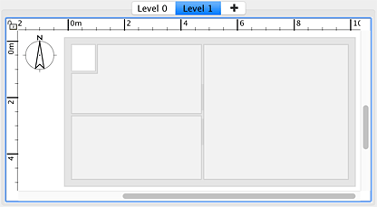
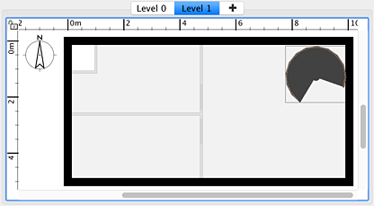

Todas as casas são criadas com um piso predefinido, mas o Sweet Home 3D também pode gerir múltiplos pisos, com uma cota
positiva ou negativa para cada piso. Para adicionar um novo piso, escolha Planta > Pisos > Adicionar piso. Assim que uma casa tiver mais de um
piso, aparecem vários separadores no topo da vista de planta que lhe permitem seleccionar qual o piso a que quer adicionar objectos.
No final da lista de separadores aparece um separador com um sinal + que pode usar para criar mais pisos, se
necessário.
|  |
| Novo piso mostrando o piso inferior em cinzento claro |
Para o ajudar a localizar-se no piso superior, as paredes e tectos do piso inferior são mostradas em cinzento claro na planta. Se o
piso seleccionado é o piso mais baixo, as paredes do piso acima serão também desenhadas em cinzento claro. Quando o magnetismo
está ativo, o cursor do rato é atraído para estas paredes e divisões para lhe permitir usar as ferramentas de paredes e
divisões mais facilmente. Se necessário, pode simplesmente copiar algumas paredes, divisões ou mobília de outro piso e
colá-las no novo piso.
Cada piso tem uma cota e outros atributos que podem ser alterados. Se o topo de algumas paredes ou
mobílias num piso inferior for mais alto que a cota do piso seleccionado, vão aparecer como cor sólida, como as paredes
exteriores, a escada em espiral e a janela à direita na figura seguinte.
|  |
| Novo piso mostrando as paredes e escada mais altas no piso inferior |
Adicionar um novo piso não tem efeito direto na vista 3D e não é adicionado automaticamente nenhum chão para separar
os pisos. Só quando começa a desenhar paredes ou divisões ou adicionar mobília é que verá estes objectos
aparecerem na cota do novo piso. |